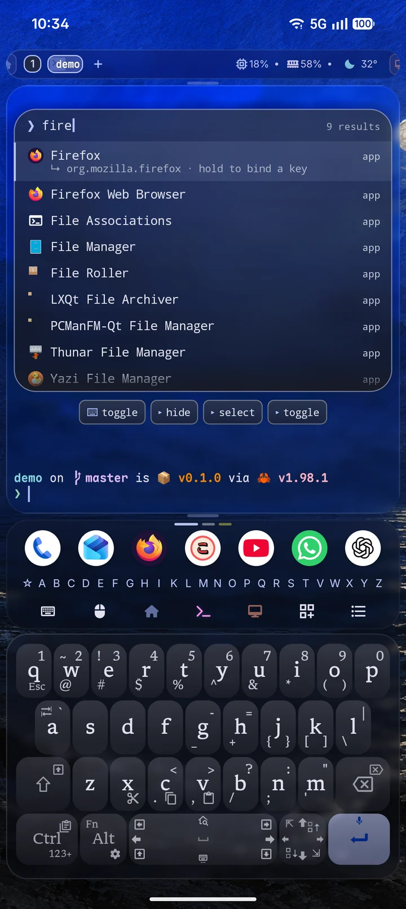
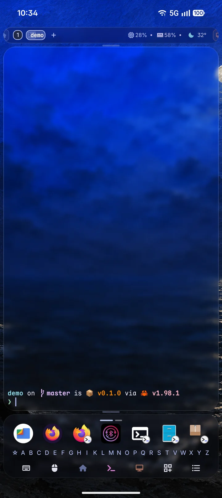
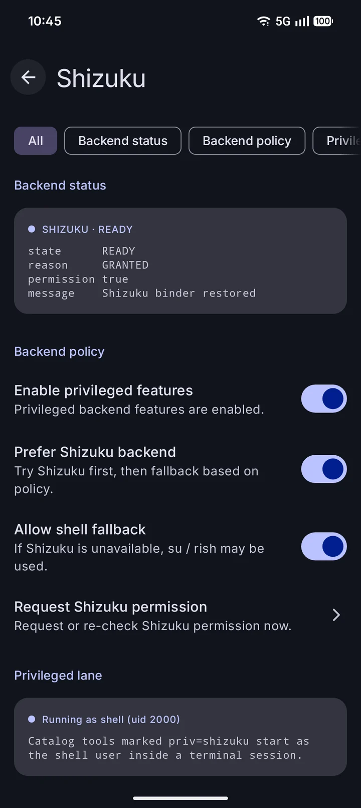

Your home screen is a terminal.
An Android launcher built on Termux. The home button opens a shell; pkg, your dotfiles and everything you already know keep working.
What it adds on top of Termux




It starts from Termux and makes it the thing your home button opens.
It stays a launcher: a dock, a drawer, notifications you can answer, colours from your wallpaper.
And it stays a terminal: a multiplexer, graphics in the shell, a palette that reaches everything.
Pick an edition, install the APK, set it as home.
The main APK is all you need. On first launch it downloads its bootstrap packages. Termux:API and Termux:Styling are optional; if you use one, take the build that matches your edition, since Android rejects mismatched signatures.
Termux edition
com.termuxThe official Termux package repos and timely updates. All four Android ABIs. Replaces official Termux; the two can't be installed side by side.
Nix edition
com.termux.launcher.nixAll of nixpkgs, declarative configs and rollbacks. Installs next to official Termux. arm64-v8a and x86_64. Companions: TLNix:API and TLNix:Styling.
Demo edition
io.vaj.tlA frozen package repo that no longer updates. Try the launcher, don't live on it. Installs next to official Termux. arm64-v8a only. Moving from VAJ to Nix.
Then, once
Open it, let the bootstrap finish, and you land in the shell. Settings, Launcher & Apps, Set as default launcher.
Optional shell setup
One script installs the shell from the recordings: fish with a Material prompt that follows your wallpaper, eza, zoxide and Neovim. Every replaced config gets a backup first. On Nix the same thing is setup-toolkits.
Everything else
Companions, ABIs, signing keys and the full walkthrough are in the docs.